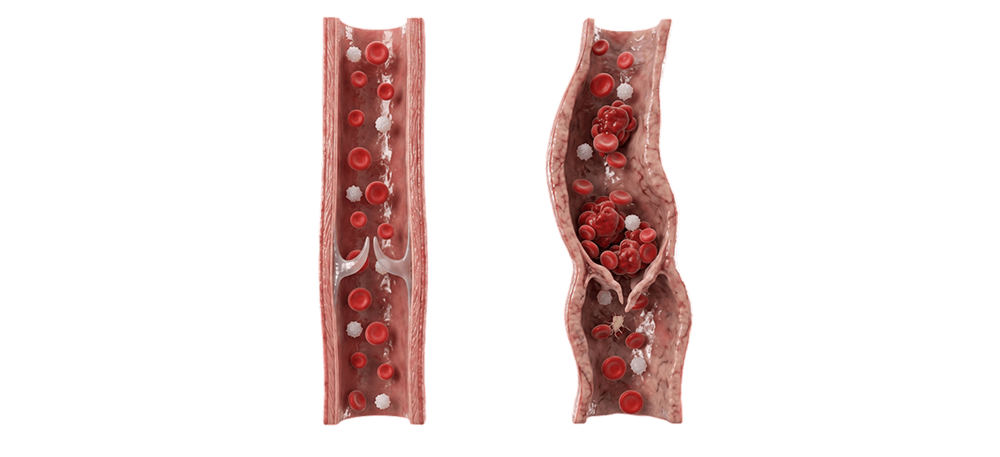
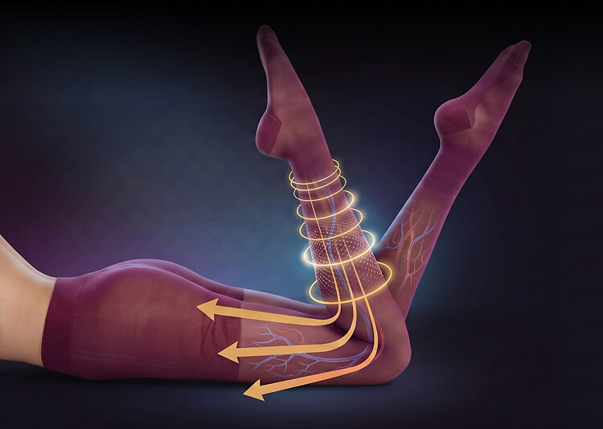

для медицинских работников:
для медицинских работников:
и использованию продукции SMARTLEG®:
Здоровье ног
Почему возникает варикозное расширение вен нижних конечностей?
Как мы знаем, кровь перемещается в теле человека по 2 кругам — малому и большому. Сердце, сокращаясь в определенном ритме, толкает ее по сосудам. Из-за гравитации кровь с легкостью перемещается сверху вниз, а вот в обратном направлении — намного сложнее.
Сокращения мышц голени при ходьбе помогают проталкиванию венозной крови вверх, а клапаны препятствуют обратному току.
В венах существуют специальные клапаны, через которые кровь проходит только в одном направлении — к сердцу и не течет обратно.

Постепенно развивается варикоз — подкожные вены расширяются, становятся извилистыми. Внутрикожные вены также могут изменяться: появляются сосудистые «звёздочки», их называют телеангиэктазиями.
Заболевания вен ног часто сопровождают отеки, боль, чувство тяжести и утомляемость в ногах. Эти неприятные ощущения как правило усиливаются к концу дня или после длительного положение стоя или сидя, а уменьшаются после ходьбы или отдыха в горизонтальном положении.
При прогрессировании заболевания отёки могут стать постоянными, кожа нижней части голеней уплотняется и изменяет цвет.
Какие факторы способствуют развитию варикозной болезни и других хронических
заболеваний вен нижних конечностей?
Как работает
компрессионный
трикотаж?

Качественный компрессионный трикотаж создает определенное давление на ноги, которое помогает уменьшить просветы вен нижних конечностей, улучшить работу клапанов и ускорить кровоток.
Все изделия SMARTLEG® оказывают давление, убывающее от лодыжек к верней части ног. Такая градуированная физиологически распределённая компрессия способствует увеличению скорости венозного кровотока, улучшению микроциркуляции и лимфодренажа, помогает уменьшить симптомы варикоза: боль, тяжесть и отёки ног.
Специалисты рекомендуют как можно дольше носить компрессионный трикотаж в течение дня, поэтому мы направили все усилия на то, чтобы длительное ношение изделий SMARTLEG® было комфортным и доставляло вам, помимо благоприятного лечебного воздействия, эстетическое удовольствие.
эффективный и комфортный!
До 60% взрослого населения развитых стран.
При этом первые симптомы часто игнорируются годами.